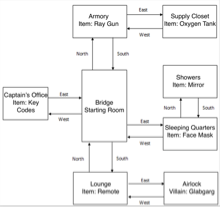
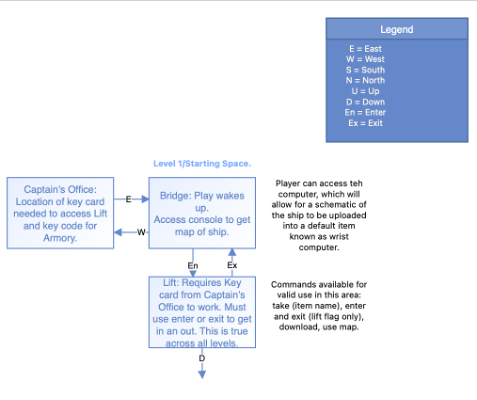
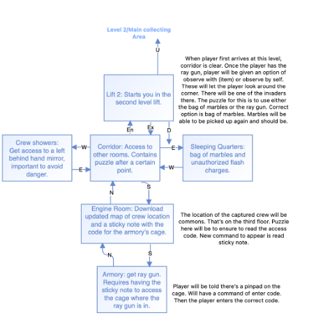
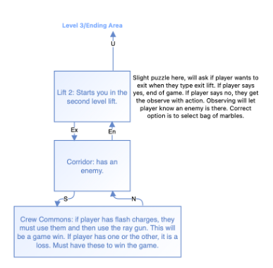
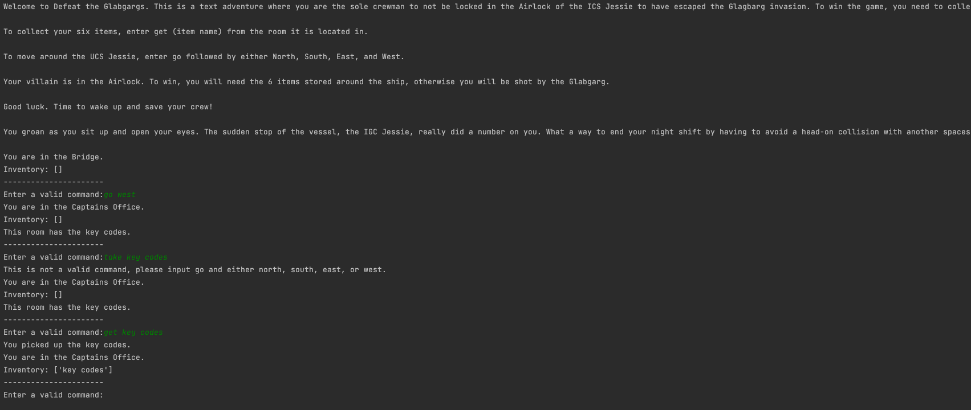
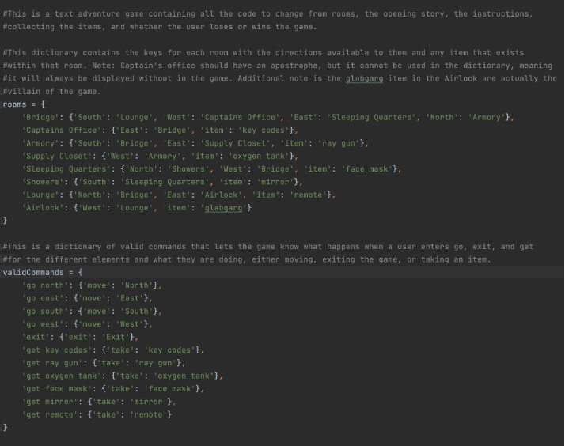
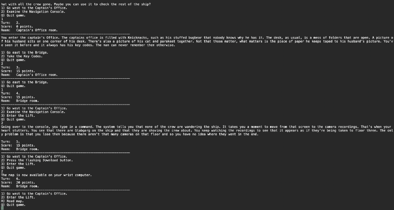

The following narrative is focused around the enhancements made for the Software Design and Engineering artifact. The artifact is a text-adventure that was created as the final project for IT140, Introduction to Scripting, from the January-February term of 2023. The original artifact was a short text-adventure that was designed using the python programming language. The game was simple and contained a basic design to help people new to programming. The original assignment had the students designing a text-adventure that contained dictionaries of rooms, movement, actions, and an inventory. This also involved ensuring win or loss conditions as well.
The reason that I selected this project was because it involved the entire process of designing and engineering a game. Since it was originally a text-adventure, it required many components. The final product involved designing the rooms, the breakdown of gathering items, moving through rooms, win/lose condition, and displaying everything in a console window. It required engineering to allow the system to make sure that it knew what rooms were where, what movements are valid, what is in the inventory, and what text was to be displayed. This also included giving user feedback when invalid actions were entered. All of this led me to knowing that I could enhance this base to create a more professional, interactive fiction.
In working on the enhancements for this project, I was able to showcase my ability to create an engaging story, create a system that works and runs more smoothly, and grow beyond a simple game to include elements, such as ‘challenges’, that make the player think. I also chose it because it shows my ability to design something that is of a professional quality and easy to follow. This allows me to more easily answer questions when asked to explain something.
To be able to begin enhancing the game, I had to first look at the original design. Below is the original layout design for the game.

This was a simple design that was composed of eight rooms with only four directions and one item per room. The game I created at the time was simple with minimal elements for storyline, as the point of the previous assignment was to show that we had learned the basics of scripting. In recreating this game, I moved the design around to make more sense for a spaceship and include the story I had originally intended, and written, when first designing the project. I had also played some interactive fiction games at this point and knew that I needed to add an element of action that would allow the player’s choices to cause different outcomes. This led me to realizing that I would need challenges that made the player think beyond just having to get all six items to win. When I took these parts into consideration, I put out a base design as you can see below.



Using this as my basis, I was able to start planning how I would want to enhance the game beyond a simple recreation. From here I used my past experience to help make these decisions. Due to work I had done in the past using the Unity game development engine, I had experience with C# and knew that it would work for creating an interactive fiction. That led me to using C# as my language of choice, even without the game development engine. From there I determined that it would be better to use an object-oriented approach. Since I was going to be able to add in the more complex components of my storyline from the original design, I wanted to have this set up because I could more easily create flags that would display different text based on the original formatting. Here is an example of what the original game was when played:

This version of the game had minimal story that was wasn’t text-wrapped. What I wanted was to create a better design that was more engaging. However, this is where I began to run into problems. In creating my enhanced design, I had to look over what the code was and figure out what I would have to separate out to create the object-oriented style. The original code was done as an all-in-one file and here is an example of that original code:

This simple code contained everything in dictionaries, but, in a more complex game that requires thought, event flags, and puzzles, this wasn’t going to work. This meant breaking everything up. I found it relatively easy to break everything up into different classes, but it became more difficult as I tried to program the game. When I first began to create the code, I started creating JSON files that would be a database to hold all of the room information, the inventory items, and so on. This became a bigger issue as I realized a couple of days in that it was unlikely for me to have something completed within the timeline I had. That meant that I had to go back and look at the design again.
This led me to looking more at my design. Since I had to take into account that I am working with a limited timeframe, I didn’t want to make my game too complicated. That led me to condensing areas. I did some more research into interactive fiction to see how I could condense to create a simpler design. By doing this and reanalyzing my design, and moving some things around, I could make the game workable, fun to play, and containing elements I hadn’t thought about before, such as how many turns the player has taken and their score. These were easy to encode without adding to my timeline, but they made the game more interesting as well. Here is an example of the running game:

This format worked and the game was playable. Certain components, as mentioned, came up as I was programming them. This was because I didn’t think of them when designing. These are the number of turns taken and points. I hadn’t thought of those things before actually coding the game. This allowed me to realize that I had some blind spots when designing. It was in the testing and debugging modes that I found these components led to a more engaging final product.
In terms of all of the outcomes for this course, I can say that I did what I could to meet them. The ones I felt were met the most were “Demonstrate an ability to use well-founded and innovative techniques, skills, and tools in computing” and “Design and evaluate computing solutions that solve a given problem using algorithmic principles and computer science practices and standards appropriate to its solution, while managing the trade-offs involved in design choices” (Southern New Hampshire University, 2024). I did work to create documentation within the code that was clear as well, which allowed me to, at a base level, meet the outcome of “Design, develop, and deliver professional-quality oral, written, and visual communications that are coherent, technically sound, and appropriately adapted to specific audiences and contexts” (Southern New Hampshire University, 2024). These are what I feel I did the best at following in terms of creating this particular artifact.
In the end, I learned that I can go all out, but that I sometimes need to be pulled back. There are deadlines that can result in not having the time to make a product to what you originally thought. I learned that sometimes following a simpler approach can help in making the product better. The biggest thing I learned is that I needed to take the time to create a design and make myself think of all the components for it from the get go. Just because I can create a design map doesn’t mean that I have thought of each part needed. This was apparent in realizing that I could engage players by adding a score and turn counter. I hadn’t thought of that until coding it. By taking that time, I could have realized this and planned for it originally instead of when it hit me. It would have led me to ending up in the direction I did without going in a different way and losing time that could have been better used elsewhere.
References/Citations
Southern New Hampshire University. (2024, August 14). CS 499: Computer Science Capstone. https://learn.snhu.edu/d2l/le/content/1831837/viewContent/38623143/View
Southern New Hamsphire University. (2025). CS 499 Milestone Two Guidelines and Rubric. https://learn.snhu.edu/d2l/le/content/1831837/viewContent/38623147/View